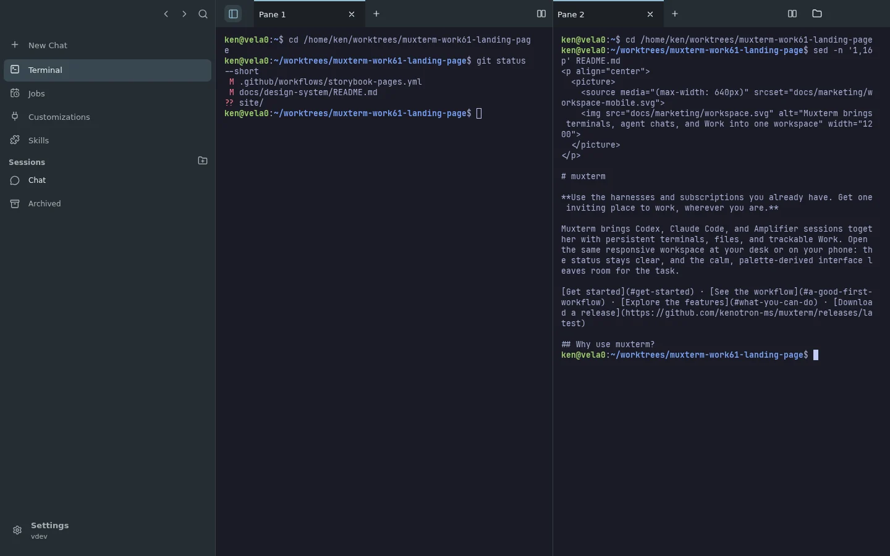
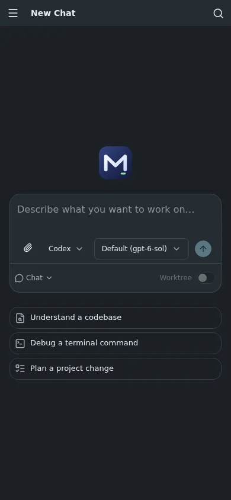

A place to return
to your work.
Your existing coding agents, persistent terminals, files, and Work in one calm workspace. Open it at your desk. Pick it up on your phone.
Self-hosted · macOS and Linux · terminal use needs no AI account

Your tools stay yours
Close the tab.
The shell stays.
Muxterm's session daemon keeps real terminals running when your browser disconnects. Reconnect and return to the screen you left, even in a full-screen terminal app.
See how persistence worksReal shells and flexible panes remain live.
Find supported agent sessions and their history.
See owners, progress, blockers, and the next action.
Bring your setup
Keep the agents you already use.
Muxterm works with Codex, Claude Code, and Amplifier using their own installed tools and sign-ins. Choose your harness in a project, then keep its conversation beside your terminal and files.

One place, different screens
Leave your desk.
Keep your place.
Open the responsive browser workspace or install its PWA on your phone. Your sessions and Work remain on your Muxterm server. With a reachable home URL, you can check progress and steer from another screen.
Start at your desk. Open a terminal and a chat in your project.
Give the work a destination. File a Work item with a clear outcome.
Pick it up anywhere. Reopen your home Muxterm URL to see what happened.
Get started
Your workspace is one install away.
Start locally with terminals. Add an agent when its own CLI is installed and signed in.
Installation guidebrew install kenotron-ms/tap/muxtermcurl -fsSL https://raw.githubusercontent.com/kenotron-ms/muxterm/main/install.sh | bashWant to review the installer first? Read install.sh. Releases and other downloads are on GitHub.